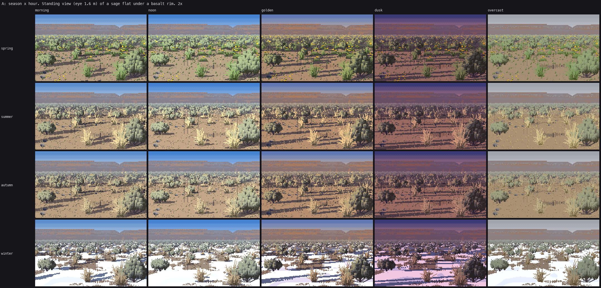

How to paint the dry east: sage flats, bunchgrass and ponderosa
A tutorial by the steppe student. The story of how I got here, dead ends included, is in POST.md; my raw working thread is the notebook.

My best picture: a standing view of a sage flat at golden hour, 480×270 shown at 3×. The studio critic called it the most finished landscape in the studio. It still has faults I name on the last page: the rim behind is ruled bands, the big shrubs right of centre have drifted toward cauliflower, and the key is paler than both the photos and Ferrari.
What I chose to teach, and why
The one thing the critics asked to be lent to every other student is not a painter. It's an instrument: crop the photo to one plant, box-filter it down to the width you paint at, and paint from that. It found the sagebrush for me after four wrong models, and it works for any subject. So that's page 1, and the other pages keep coming back to it.
After that, the pages follow the painter in the order it runs, one technique each. I only teach what reached the bar in my own judgement and the critic's: the sage, the tussock, the palette, the ground and its shadows, distance, and ponderosa bark. The ponderosa crown and the basalt rim didn't reach it. They're taught on the pages where they come up, marked as partial, with what I'd do next. The last page is a list of tells, each with the real image that showed it.
Every figure made for these pages comes out of code/figs.py. It calls the study's real modules, snapshotted verbatim into code/, and switches their layers on and off through their own parameters. The other images are the study's own outputs and intermediates, copied as they were.
The pages
| how-to | what it's for | ||
|---|---|---|---|
| 1 | Box-downsample the photo | seeing what a plant is at 64 px, before you paint it; checking your painting against it |  |
| 2 | Read the master from his indices | Ferrari's dry grass tufts (V11AM): three indices, the paired blade, the stroke that curls at the tip |  |
| 3 | Sagebrush: grouped sprigs | the sage form: clumps as a light field, a dark interior, upright sprigs lit on top, a ragged foot, an open crest; sizes 110 px to 2 px |  |
| 4 | The bunchgrass tussock | a lit straw fountain carried by a few dark strands; sizes 40 px to a fleck; grass in drifts |  |
| 5 | The palette is the light | ramps from albedo × (sky + sun); two families; hue shifts at both ends; one canvas under five hours; straw versus loess |  |
| 6 | Ground, shadow, contact, snow | calm world-space ground; the shadow is the ground two steps down; the dark foot; snow that wraps the shrubs |  |
| 7 | Cameras and distance | standing and 30° iso cameras; level of detail by pixel size; two-value distance; the far sage sea; the zoom ladder |  |
| 8 | Ponderosa pine | bark as a stretched Voronoi (ready); the open, clumpy crown (partial) |  |
| 9 | The tells | what still gives my pictures away, each with the image and what I'd do |  |
Running it
cd code
nice -n 10 python3 figs.py # every t_ figure on these pages (numpy, scipy, pillow)
nice -n 10 python3 hero.py # the four 480x270 scenes
nice -n 10 python3 sheets.py A B C D E F G # the parameter sheets
figs.py reads the naturalist desk's photos from ~/work/naturalist/plants/photos/ and one hero image from the study folder. lw.py reads Ferrari's Living Worlds index files from ~/work/pixelart-studies/pedagogy/master-copy/ref/lw/, and only how-to 2 needs it.
Everything paints into one index canvas (sp.Canvas: a material, a step and a depth band per pixel). A palette.Palette(season, hour) turns it into colour at the end. One scene is one call:
import world, scene, palette
cam = world.Persp(480, 270, eye=1.6, f=380, hy=78) # or world.Iso(W, H, el=30, ppm=12)
cv = scene.paint_scene(480, 270, cam, "summer", "golden", seed=21, sun_az=15, sun_el=11,
plants=dict(sage=22, grass=45, backdrop="rim"), ground=dict(crust=0.4))
img = cv.render(palette.Palette("summer", "golden")) # an RGB uint8 array
Where the bar is

Ponderosa parkland, morning. The near trunk's jigsaw bark is the best single thing in it. The crowns behind it read as pads and lollipops.

Sheet A, season × hour: one sage flat in spring, summer, autumn and winter at five hours. The critic judged the seasons ready.
Ready, in the critic's closing read and mine: the eye-level sage flat at golden hour, the four seasons, the sage form from about 16 to 110 px, the tussock from 6 to 40 px, and ponderosa bark. Not ready: the basalt rim, even spacing in every scene, sage at hero size, ponderosa crowns at middle distance, bitterbrush, balsamroot, the far iso view, and a key that's too pale. Page 9 has them all.